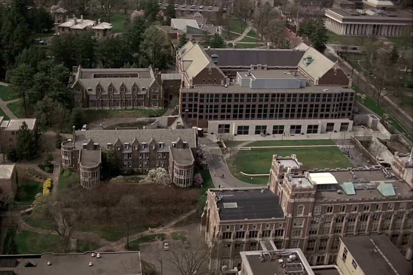

Sinopsis
La serie sigue a Gregory House, un médico especialista en diagnóstico que trabaja en el ficticio Hospital Princeton-Plainsboro en Nueva Jersey. A pesar de su comportamiento antisocial y su adicción a los analgésicos, House es reconocido por resolver casos médicos complejos que otros no pueden diagnosticar.
Estudio De Grabacion
Aunque la historia se sitúa en Nueva Jersey, la serie fue filmada principalmente en estudios de Los Ángeles, California. Algunas tomas exteriores fueron realizadas en el campus de la Universidad de Princeton.
(Puede acceder a la ubicacion clickeando la imagen)
